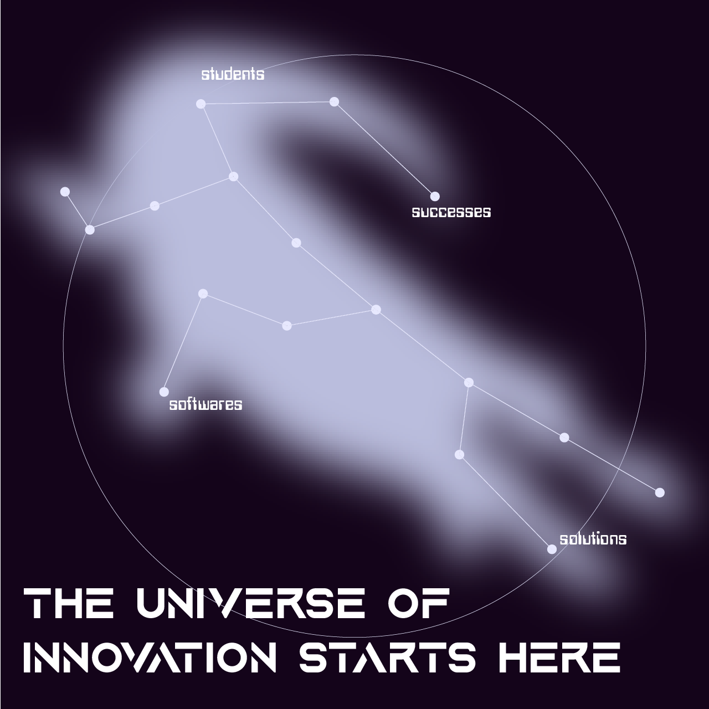
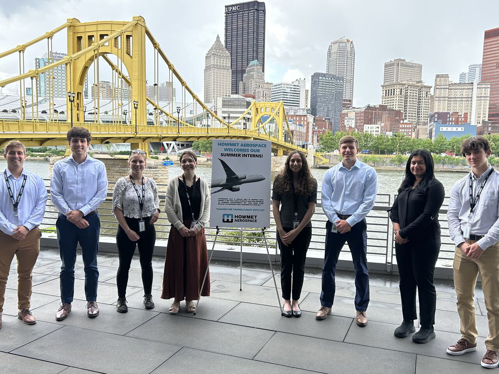
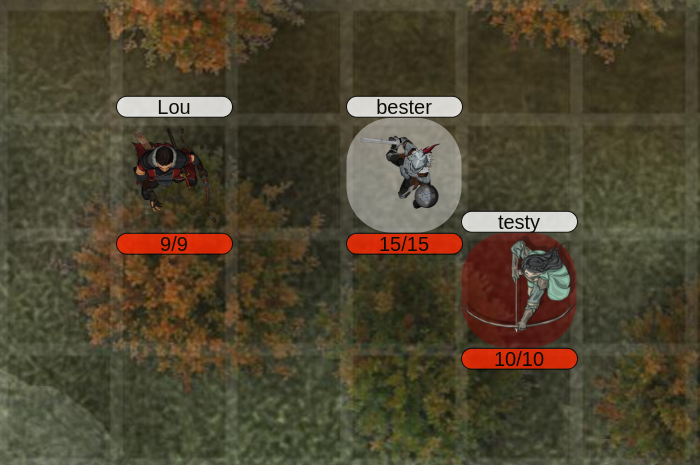

My Journey so Far...

Director of Public Relations
Oct 2024 - Present
Association for Computing Machinery (ACM), Allegheny College Chapter
- Organized all existing and new members
- Contacted and informed members about events and updates regarding ACM
- Primary point of contact for alumni and companies regarding collaboration events

IT Applications Intern
May 2024 - Aug 2024
Howmet Aerospace
- Contributed to the development, configuration, and documentation of Oracle Human Capital Management applications
- Assisted vendors with technical issues and the implementation of HCM systems
- Researched emerging software and technologies to identify potential solutions for future developments
- Effectively communicated with team members to organize the completion of long-term projects
Software Engineering Outstanding Junior Major Prize
Apr 2024
Allegheny College
- Awarded for exceptional academic achievement, performance in the seminar, and contribution to the general life of the department

PathRoller
Mar 2024
- Currently developing a semi-automated virtual tabletop for the roleplaying game Pathfinder 1st Edition by Paizo Inc.
- Automating many manual calculations away to create a streamlined and simplified playing experience
- Used Javascript, HTML, and CSS to build, frame, and design a Node.js Project
- Implemented a MongoDB database to track character and user information
CSC Academic All-District Honors
Nov 2023
Allegheny College
- Recognized as a top student-athlete for my combined performance on the soccer field and in the classroom
Technical Leader
Sep 2024 - Present
Allegheny College
- Provided invaluable technical support to students in the Allegheny College CIS department, ensuring a smooth learning experience
- Assisted students in setting up and configuring their computer systems with the necessary software and tools needed for class
- Provided step-by-step guidance to students on assignments in order to build a supportive learning environment
Allegheny College Financial Literacy Challenge Finalist
Dec 2022
Allegheny College
- Created a comprehensive personal budget and investment plan then reported and presented it to a panel of Allegheny College financial professionals
Allegheny College
Aug 2022 - Dec 2025
- Major: Software Engineering
- Minor: Economics
- Member of the Division III Allegheny College Mens Soccer Team